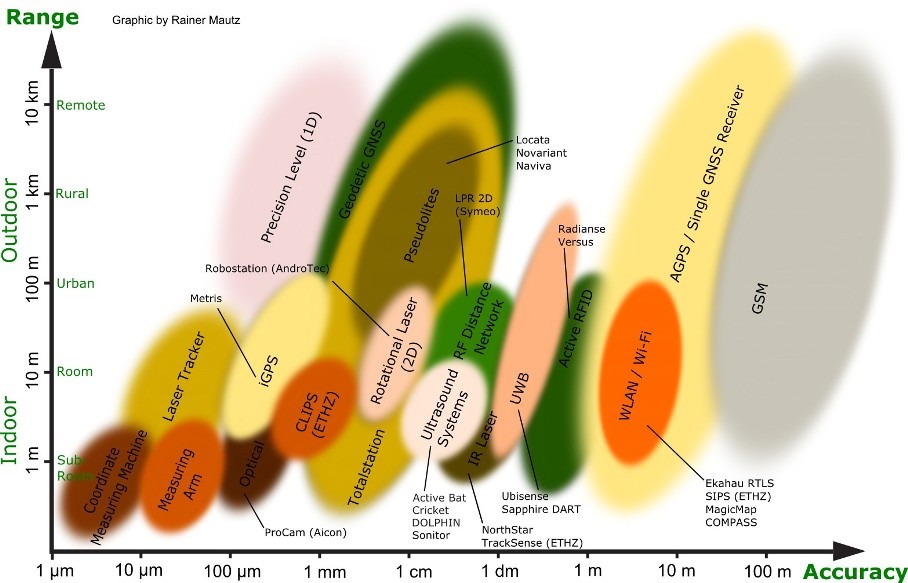
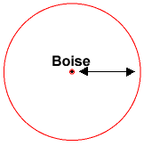
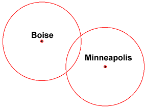
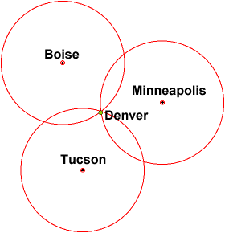
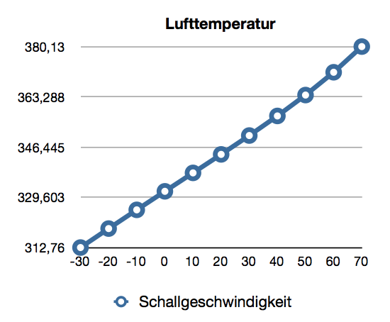
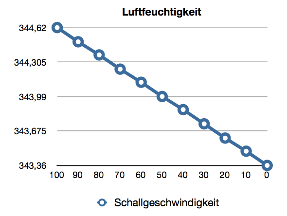
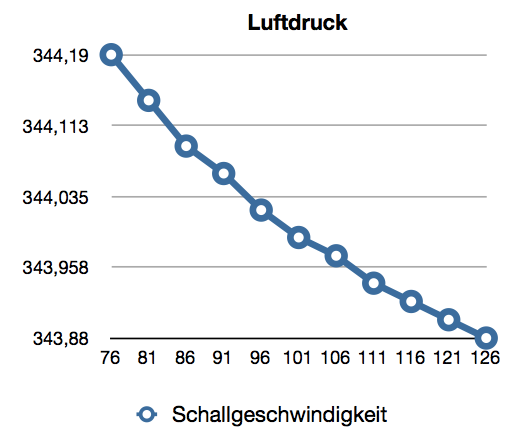
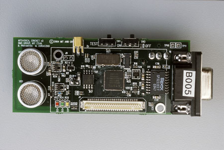
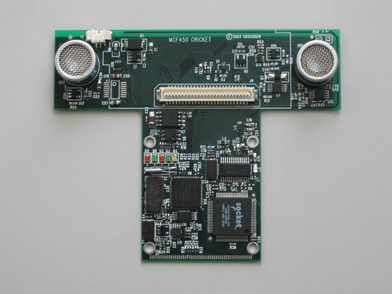

Indoor-
Localisation
von Andreas Pfohl und Sebastian Mai
## Gliederung
* Lokalisierungsmethoden
* Ultraschall

Quelle: geometh.ethz.ch
## Globales Navigationssatellitensystem

Quelle: Wikipedia
### Nachteile
* starker Signalverlust durch Wände
* Reflexionen
* nur für grobe Raumlokalisierung
### Vorteile
* höhere Signalstärke
* Signale gehen durch Wände
* bessere Nutzung für indoor
### Nachteile
* geringe Genauigkeit
## Nachteile
* Laser sehr teuer und groß
* Kameras sind sehr rechenaufwendig
## Sprechende Infrastruktur
## Unterschied
* Ort der Berechnung

Quelle: electronics.howstuffworks.com/gadgets/travel/gps1.htm

Quelle: electronics.howstuffworks.com/gadgets/travel/gps1.htm

Quelle: electronics.howstuffworks.com/gadgets/travel/gps1.htm
* Lufttemperatur
* Luftfeuchtigkeit
* Luftdruck
---
* Reflexionen
* Absorptionen

101,325 kP, 50 %
Daten: www.sengpielaudio.com/Rechner-luftdruck.htm

20 °C, 101,325 kPa
Daten: www.sengpielaudio.com/Rechner-luftdruck.htm

20 °C, 50 %
Daten: www.sengpielaudio.com/Rechner-luftdruck.htm
## Quellen
* Chen, Yongguang und Hisashi Kobayashi: Signal Strength Ba- sed Indoor Geolocation.
* Cobb, H. Stewart: GPS Pseudolites: Theory, Design, and Applications.
* Mautz, Rainer: Overview of Current Indoor Positioning Systems.
* Wikipedia: Schallgeschwindigkeit
## Ziele
* Privatsphärenschutz
* Skalierbarkeit
* Raumsegmente unterscheiden
## Aufbau
* Beacon
* Listener
## Beacon
* Ultraschallsender
* RF-Sender
## Listener
* Ultraschallempfänger
* RF-Sender
* RS-232-Schnittstelle
### < 10$ pro device
* PIC-μController: 68Byte RAM und 1024 Worten Programmspeicher
Kollisionsbehandlung
und Timing
Cricket Version 2
– Rundum bessere Hardware –


- ATMEGA 128L
- TinyOS
- Thermometer
### Entfernungsmessung mit Zentimergenauigkeit
# Quellen
* Priyantha, Nissanka Bodhi, Anit Chakraborty und Hari Balakrishnan: The Cricket Location-Support System. In: 6th ACM MOBICOM, Boston, MA, August 2000
* Priyantha, Nissanka Bodhi, Allen K. Miu, Hari Balakrishnan und Seth Teller: The Cricket Compass for Context-Aware Mobile Applications. In: 7th ACM MOBICOM, Rome, Italy, July 2001
* Baliga, Roshan Bantwal: Rapid Coordinate System Creation and Mapping Using Crickets. Master’s Thesis, Department of Electrical Engineering and Computer Science, Massachusetts Istitute of Technology, Juni 2004
* Priyantha, Nissanka Bodhi: The Cricket Indoor Location System. Phd Thesis, Department of Electrical Engineering and Computer Science, Massachusetts Istitute of Technology, Juni 2005
* [http://cricket.csail.mit.edu/](http://cricket.csail.mit.edu/) (Stand 30.06.2013)
## Bildquellen
* [http://cricket.csail.mit.edu/](http://cricket.csail.mit.edu/) (Stand 30.06.2013)
* [http://oxygen.lcs.mit.edu/E21.html](http://oxygen.lcs.mit.edu/E21.html) (Stand 30.06.2013)